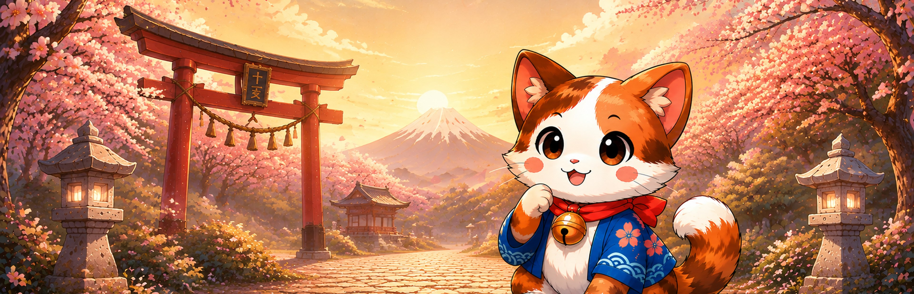
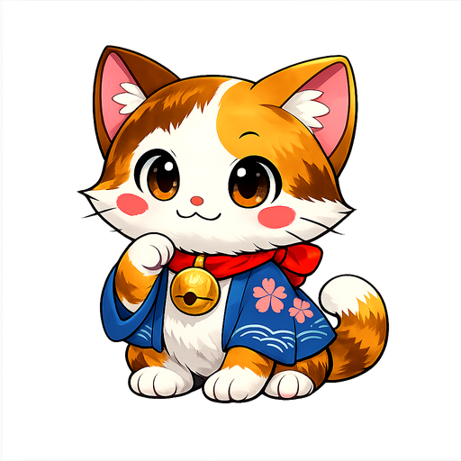
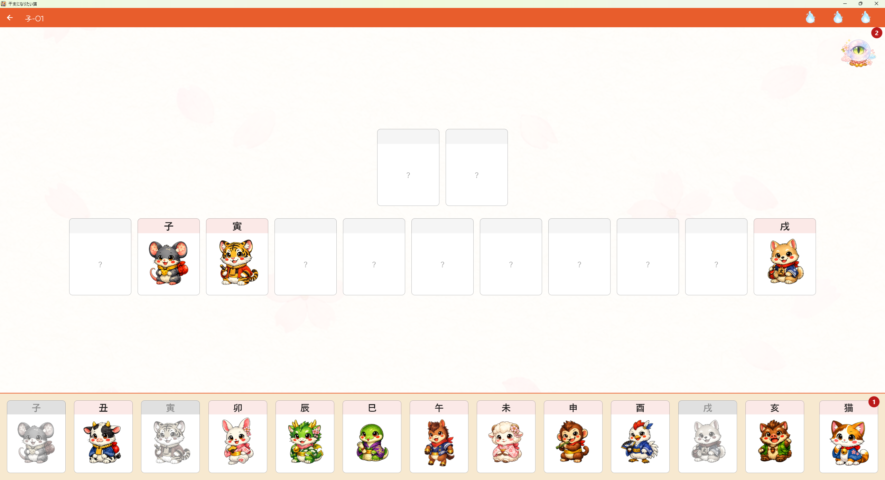
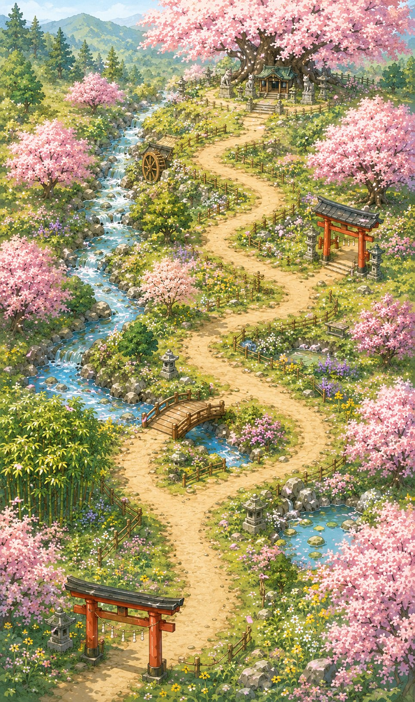

十二支をめぐる、ひらめきの旅。
ぼくも、みんなの仲間になれるかな。
十二支の「順番」が、小さな猫の道しるべ。
四季を旅する、やさしくて奥深い論理パズル。
Steamで近日登場 ／ 本編3章・60ステージ無料

仲間に、いれてほしいにゃ。ものがたり
十二支にいない、
小さな旅人。
子、丑、寅、卯……。
みんなには、昔から決まった順番がある。
けれど、その中に猫の名前はありません。
十二支の仲間になりたい猫といっしょに、
春から冬へ、一年をめぐる旅に出かけましょう。
ひとつのひらめきが、次の出会いにつながります。
まずは、猫の旅をのぞいてみよう
ひらめきと、出会いの予感。
あそびかた
「順番」がわかれば、
猫が見えてくる。
必要なのは、十二支の順番と、ちょっとしたひらめき。
運や反射神経に頼らず、じっくり考える楽しさを。

実際のゲーム画面- 一
手がかりを見つける
最初からわかっている動物の位置をチェック。
- 二
十二支の順番で考える
「子の次は丑、その次は寅……」
並びをたどって、空いた場所を推理。 - 三
紛れ込んだ猫を見つける
手がかりがつながると、答えが見えてくる。すべての問題が論理だけで解けます。
ひとりでじっくり。親子でいっしょに。
難しい計算や専門知識はいりません。小学生から楽しめて、進むほどに考えごたえが増していきます。
春夏秋冬、十二支に会いに
解くたびに、季節がひらく。
桜の小道、まぶしい緑、色づく山、雪の庭。
次のひらめきの先には、どんな景色が待っているだろう。

旅を彩る仲間たち
十二の出会い。
宝物になる思い出。
各章の終わりで待つ、十二支の仲間たち。
旅の思い出は、冒険アルバムに残っていきます。
12章
20ステージ
240のひらめき
本編と追加DLCを合わせた総ステージ数です。
小さな猫と、最初の一歩を。
ぼくの旅を、
いっしょに。
まずは「子」「卯」「午」の3章、
60ステージを無料で。
近日登場 ／ Windows・日本語対応
もっと旅を続けたいあなたへ
残りの9章は追加DLCで楽しめます。
各章20ステージ。それぞれの干支と季節をめぐる、新しい旅が待っています。